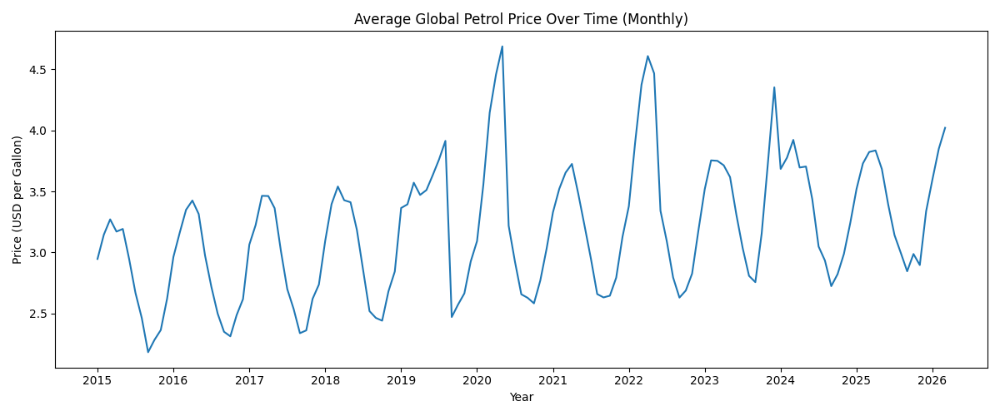
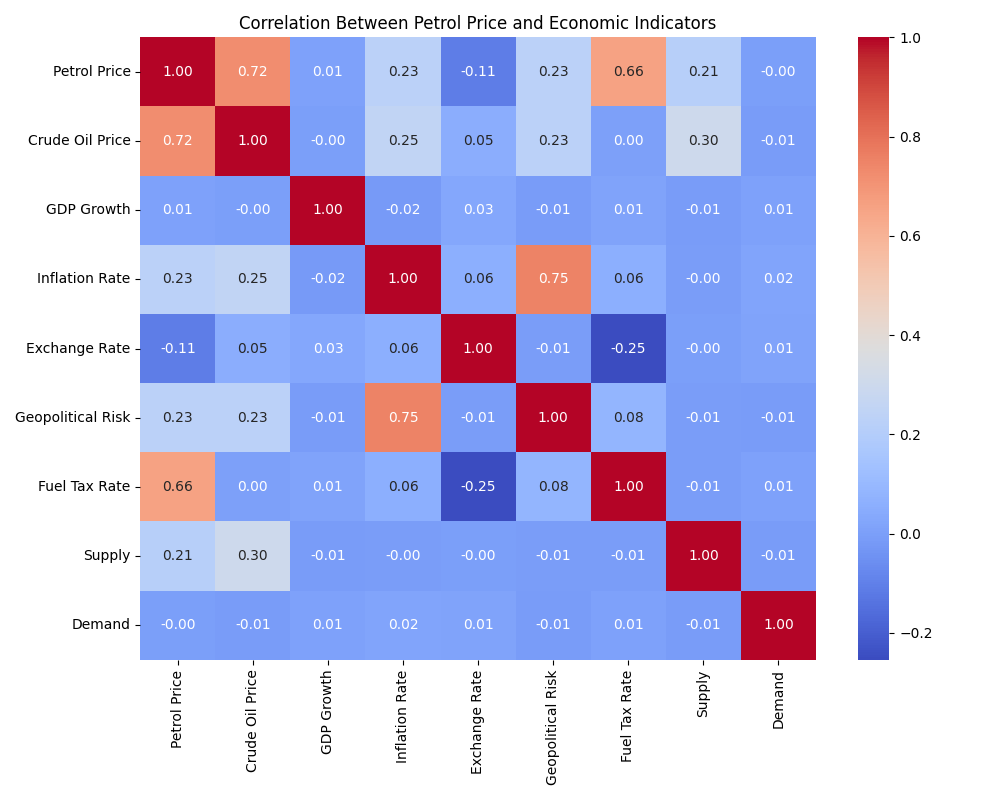
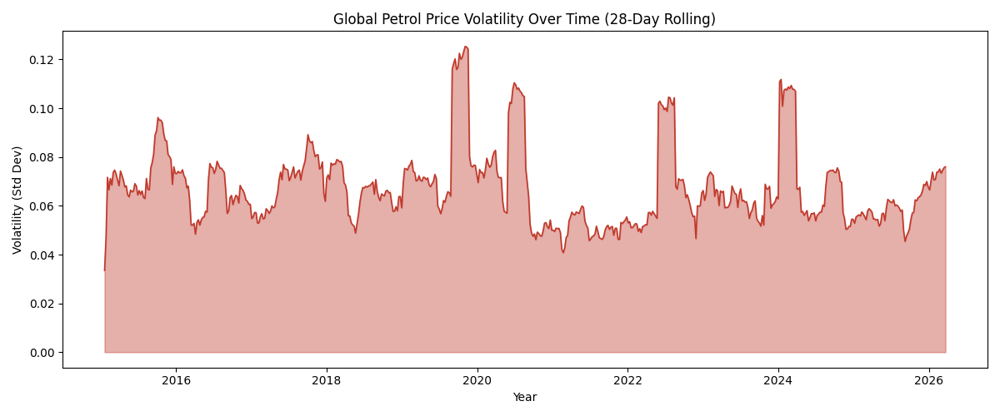
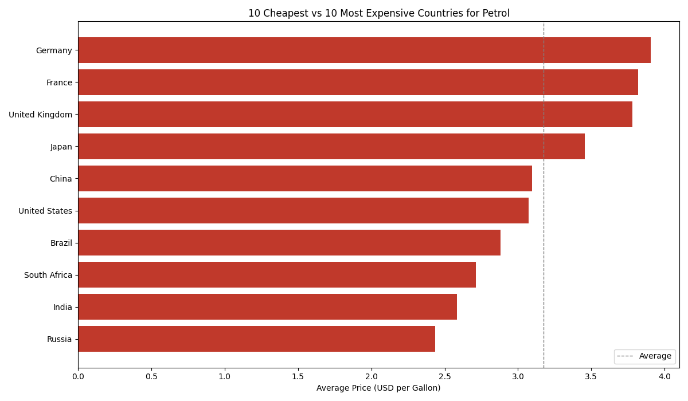
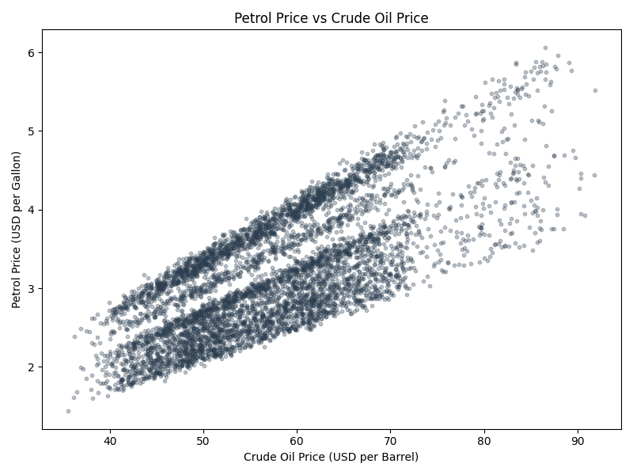
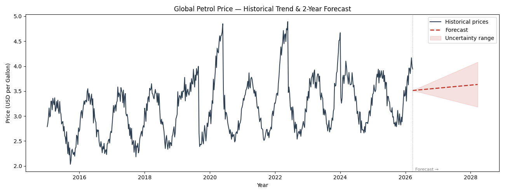

Statistics Project — Global Energy Markets
An analysis of global petrol prices from 2015 to present, exploring correlations with economic indicators, country-level differences, market volatility, and future price forecasting.
01 — Dataset
This analysis uses a cleaned dataset sourced from Kaggle covering weekly petrol, diesel, and natural gas prices across countries and regions from 2015 to present. Each record is paired with key economic indicators, making it possible to study not just what prices were, but why they moved.
The dataset includes GDP growth rate, inflation rate, exchange rate vs. USD, crude oil price, geopolitical risk index, supply and demand indices, subsidy levels, and fuel tax rates — giving a rich, multi-dimensional view of what shapes energy prices globally.
02 — Price Trends
Looking at the monthly average of petrol prices across all countries reveals clear macro-level events that shook global energy markets.
Monthly average petrol price in USD per liter, aggregated across all countries.

Write your analysis here.
03 — Correlations
A correlation heatmap shows at a glance how strongly petrol prices relate to each economic variable. Values close to 1 or -1 indicate a strong relationship; values near 0 suggest little connection.
Pairwise Pearson correlation coefficients between petrol price and key economic variables.

Write your analysis here.
04 — Volatility
Price volatility — how much prices swing up and down — is just as important as price levels. High volatility makes it harder for governments, businesses, and consumers to plan ahead.
Rolling standard deviation of petrol prices over a 28-day window.

Write your analysis here.
05 — Country Comparisons
The same barrel of crude oil produces vastly different pump prices across the world. Fuel taxes, subsidies, currency strength, and geopolitical stability all shape what consumers pay.
Average petrol price by country across the full dataset.

Write your analysis here.
Scatter plot showing the relationship between crude oil and petrol prices across all records.

Write your analysis here.
06 — Forecasting
Using historical price trends, a linear regression model projects where petrol prices may be headed. The shaded area represents growing uncertainty further into the future.
Projected petrol prices based on historical trend analysis using linear regression.

Write your analysis here.